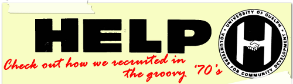
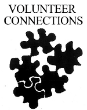
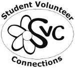
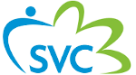

our story
In 2009, SVC took on a new brand, ambition, and attitude in order to be more effective for the students and community of Guelph. Our new look has assisted us in bringing forth exciting new programs and campaigns to the students of the University of Guelph and the Guelph/Wellington Community.
the milestones |
the look |
|
|---|---|---|
1967| |
The student-run Newman Club recognized a real need at the University of Guelph campus and in the greater Guelph community for student volunteers. With this need in mind, the students approached Rev. F. Whelan, the Catholic chaplain on campus, and with his aid, the HELP program was founded. Named after the Beatles 1965 No.1 hit single, HELP was a student organization that challenged students to take social action in the community with a few organizations, primarily schools and senior homes. |
1967 - 1985
|
1968| |
HELP's ‘social action now’ program was created. The first thing on the agenda, raising $5,000 to build, open, and maintain in partnership with the Guelph Reform Church, ‘the Torch’, a drop-in centre for at-risk youth. 1968 UoG News Bulletin [PDF] |
|
1976| |
HELP grew significantly and became embedded into the University of Guelph's culture. Over 200 students were utilizing HELP and were consistently volunteering within the community. Students filled the needs for key areas such as tutoring, helping special needs children and adults, and volunteering at senior homes.  |
|
1985| |
The Central Student Association club ‘HELP’ was renamed to Volunteer Connections to better represent its services and programming. |

1985 - 1995
|
1987| |
Student Volunteer Connections of Guelph incorporates, gaining the status of a government-registered not-for-profit organization, and becomes Canada's first and only student volunteer centre. |
1995 - 2001
|
2001| |
Celebrating the International Year of the Volunteer, the interactive Community Action Network, (iCAN) is officially launched in collaboration with Student Life and the Centre for International Programmes. |

2001 - 2008
|
2002| |
SVC celebrates 35 years of igniting and connecting students to the Guelph and Wellington Community through volunteerism. |
|
2006| |
The first Positive Social Action Conference is implemented with great results! Craig Keilburger, world-renown Child Activist and founder of Free the Children, delivers a powerful and insightful keynote speech. |
|
2009| |
The Social Action Series offers more outreach, opportunities, and awareness of volunteer placements and organizations in Guelph. |

2009 - current
|
2012| |
SVC moves to Raithby House, in the middle of the Guelph campus, increasing its exposure. |
|
today| |
As the only government-registered student volunteer centre in Canada, SVC celebrates its 46th year of operation with new and improved programming, services, and collaborations that promote social action, student volunteerism, and community. |
2013 - current
|
{kind=link}
{kind=link}